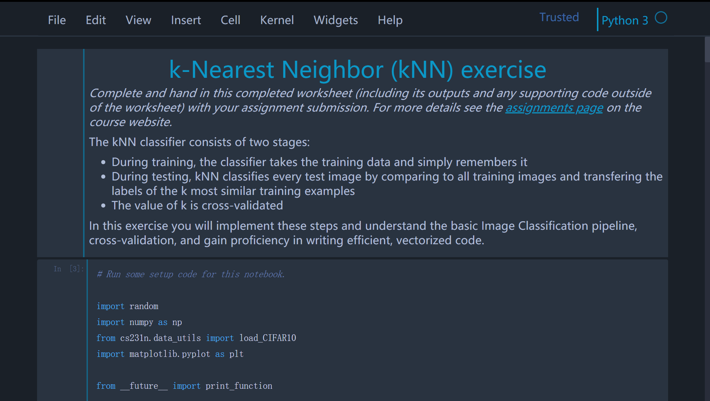

代码10分钟，配置一小时
总算cs231n之旅要开始了，在看syllabus的时候就看到了噩耗-所有的assignment都是用jupyter编写的。（因为之前在上我校水课数据挖掘的时候就接触到了这个看似先进的……嗯怎么说呢，本地C/S架构的pythonIDE。(尤其是那个天才的JavaScript魔术代码简直智障的不行)于是乎就开始了配环境的折腾之旅。
安装anaconda
这个没什么好说的，win10在官网上下载安装运行一气呵成。IDE用的是anaconda推荐的vscode，之前用惯了pychram，现在发现vscode的各种功能（插件）都比较成熟，可以初步使用，而且可定制化程度比pycharm高，还不用pycharm那么多的内存和启动时间。
事实上到这一步jupyter基本可以用了，但是还是存在很不爽的几点：
- 只能通过anaconda navigator打开界面
- 不能设置访问到的根目录，同时在jupyter里写的代码只能通过内置的下载功能得到，简直是脱裤子放屁。
- 默认主题是白色的，看得眼瞎。
添加路径
接下来我们对于jupyter notebook进行路径的配置（事实上也是对于anaconda里内装的所有库进行路径配置（如果这些库能在cmd中被调用的话）），在path中添加以下路径1
D:\anaconda\Scripts
这个路径包含了anaconda当前环境下装的库的可执行文件，放入path下就可以直接在cmd窗口中运行。
在添加了path以后可能新建cmd窗口发生还是找不到对应命令的情况，这时候可以尝试用管理员权限重新打开cmd，会更新path目录。
在上述步骤顺利完成的情况下，只需要在cmd窗口中输入1
jupyter notebook
即可打开本地服务器。
重新设置jupyter根目录
本节参考了： reference
简述：在cmd窗口中输入：1
jupyter notebook --generate-config
输入成功后，会跳出设置文件的地址，一般来说在users什么的目录下。
打开设置文件，用什么编辑器都可以，然后找到如下的一串代码1
2## The directory to use for notebooks and kernels.
# c.NotebookApp.notebook_dir = ''
改成1
2## The directory to use for notebooks and kernels.
c.NotebookApp.notebook_dir = '你要的根目录地址'
设置成功之后，jupyter notebook都会默认你设置的根目录地址下打开。
更改主题
本节参考了：reference
里面很详细，就按上面的来做肯定没有问题。
贴一下修改完成后的样子（在chrome的F11全屏模式下）
